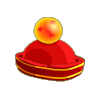
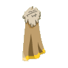
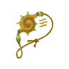
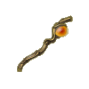

Menu barbok'you

| Niveau 24 | Crystal O'boul | ||
|---|---|---|---|
| Recettes : | Caractéristiques : | Conditions : | |
|  | 10 Poils sanglier 10 Ficelle lin 10 Poils souris 1 Pierre de crystaloboule |
+21 à 50 vie | aucune |
| Remarques : | |||
| Niveau 67 | Cape du Désir O'Boul | ||
|---|---|---|---|
| Recettes : | Caractéristiques : | Conditions : | |
|  | 20 Plume de piou violet 20 Plume de piou rose 20 Plume de piou vert 20 Plume de piou rouge 20 Poils sanglier des plaines 20 poils de bwork mage |
+41 à 60 vitalité +16 à 30 sagesse +3 à 4 CC +4 à 5 dommages |
aucune |
| Remarques : | |||
| lvl 77 | La Doubitch O'boul | |
|---|---|---|
| Recettes : | Effets : | |
|  | 20 Rougelys 20 bluegelys 10 Gelée fraise royale 1 bonbon unique au gout magique 20 bonbons à la menthe qui ont rebuté plus d'un vegetarien 1 Confiserie interdite à la vente pour des raisons obscures |
+1 PA +42 à 58 vitalité +25 à 34 intelligence +13 à 15 prospection |
| Niveau 59 | Kryst O'Boul | |||
|---|---|---|---|---|
| Recettes : | Effets : | Caractéristiques : | Conditions : | |
|  | Dom : 16 à 20 (neutre) +19 à 30 agilité +24 à 30 sagesse +10 à 30 intelligence +1 à 5 CC -12 à 20 vitalité |
PA : 3 Portée : 1 à 1 Bonus CC : +5 Critique : 1/30 Echec : 1/50 |
intellignece > 59 agilité > 5 |
|
| Remarques : | ||||
| 1 Items | Aucun bonus |
|---|---|
| 2 Items | +20 Vitalité / +10 Intelligence / +5 Sagesse / +2 CC |
| 3 Items | +40 Vitalité / +20 Intelligence / +10 Sagesse / +4 CC |
| 4 Items | +80 Vitalité / +40 Intelligence / +20 Sagesse / +8 CC |
Dofus est un MMORPG édité par Ankama." Barbok " est un site non-officiel sans aucun lien avec Ankama.
Toutes les illustrations sont la propriété d'Ankama Studio et de Dofus. Le contenu de ce site a été rédigé initialement par Immortal, il ne s'agit que d'une remise en ligne effectuée par Eternal Games.